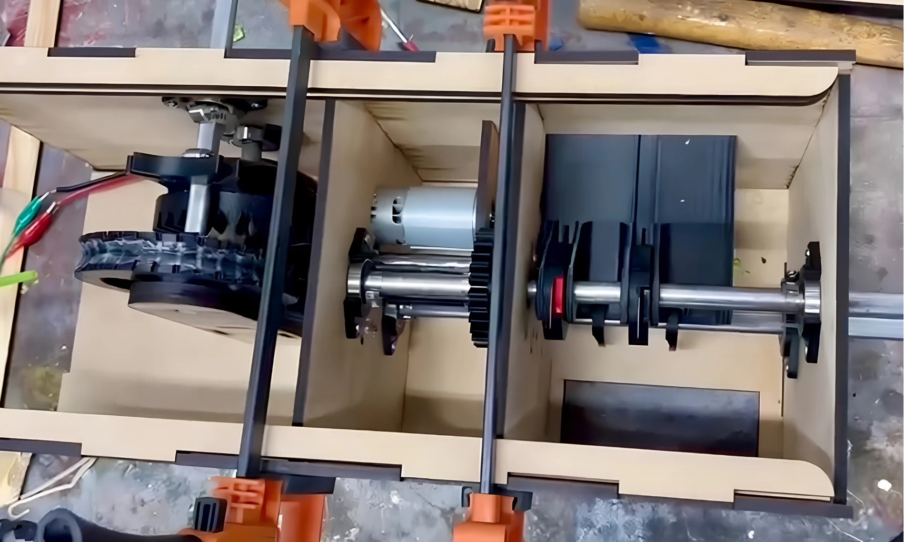

01 Concept

Convert continuous rotation into indexed motion and synchronize feeding with the double-blade cutting concept.
MECHANISM DESIGN · ACADEMIC TEAM PROJECT
An academic team project translating an industrial cutting problem into a manufactured, instrumented prototype.

Original project evidence. Figures are extracted from the Spanish presentation delivered to the project partner. Key results are translated alongside them.
01 / PROBLEM → CONCEPT
Inconsistent extrusion cut lengths created waste and rework. The existing machine used a continuous motor and a servomotor.
The team proposed one shared drive for feeding and cutting: a Geneva mechanism for intermittent indexing, a reduction train for torque and a double-blade cutter.


02 / CONCEPT → CAD
Convert continuous rotation into indexed motion and synchronize feeding with the double-blade cutting concept.

Develop each module around its function, then align the shafts, gears and supports at their interfaces.

Package the three modules inside a supporting enclosure driven by one motor.


03 / CAD → HARDWARE

Laser-cut enclosure and support parts, printed components and machined hardware brought the CAD into physical form.

The team aligned the transmission, feeder and cutter, then integrated the motor and monitoring electronics.
A revolution counter and interface provided a basis for observing operating behavior.


04 / PHYSICAL OPERATION
Two recordings of the mechanism operating.
05 / RESULTS → NEXT ITERATION

| Result | Interpretation |
|---|---|
| 690 RPM | Reported prototype speed. |
| Up to 2,760 pieces/min | Theoretical rate stated in the presentation. Not demonstrated as sustained production output. |
| Single-motor synchronization | Feeder, gears and cutter operated through a shared mechanical drive. |

| Observed issue | Proposed next step |
|---|---|
| Feed-wheel slip | Increase traction or redesign feeder contact. |
| Excessive mechanism friction | Bearings, lubrication and fewer transmission stages. |
| Insufficient blade sharpness | Evaluate hardened steel or TiN-coated blades. |
| Power / controller failures | Electronics sized for the operating load. |
| Gear fracture during cutting | Resize gears for cutting loads. |
| High cutting-force demand | Evaluate a flywheel for cutting transients. |
A functional platform for further development. The prototype combined a shared mechanical drive with operational monitoring. Its intended industrial benefit is more consistent cutting and reduced waste; further iteration is needed to establish sustained production performance.


Academic team project · Diseño de mecanismos, M2004B · 23 October 2025.
Tuerca Madre: María Valeria Castañeda Villagran, Valeria Miramontes Dubost, Luca Trevellini Campos, Luis Enrique Flores Rascon and Roberto Guagnelli García.
← Explore more engineering projects